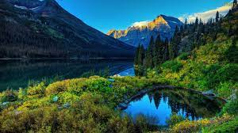
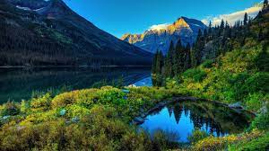

Fotos tiradas por hobby
Fotos da Natureza
 

Fotos de cidades

Fotos tiradas a trabalho
Fotos de casamentos


Fotos com tema livre
História de Zedlav Nomar
Zedlav Nomar sempre sentiu uma grande atração por fotografias e artes visuais desde a infância. Nascido em 1984 no interior de Acapulco, na costa Sul do México, Zedlav teve contato com o universo cinematográfico e paisagista da região bem cedo, o que foi um contribuinte excepcional para a formação de sua carreira. Com um famigerado aprecio pela vida tropical que o rodeava, o artista não tardou a solidificar o que via por meio de fotos, tomando essa prática desde os seis anos de idade, quando havia ganhado uma antiga máquina fotográfica de seu pai, Ues Nomar.
Já na juventude, cursou fotografia na modalidade de tecnologia em Melipe, e concluiu um bacharelado em 2006. Após constituir sua formação, passou dois anos viajando por seu país, fotografando a variedade de paisagens urbanas, naturais, e close-ups de diversas espécies biológicas.
Conseguindo arrecadar uma renda estável com seu trabalho, viajou para os Estados Unidos buscando ampliar ainda mais seu acervo de imagens, o que resultou acréscimo de sua fama por conta da versatilidade de sua galeria. Embora não seja considerado um sucesso, a venda de seu material o fez estar presente diversas vezes em jornais, sites de internet, programas de televisão, tópicos de criadores de conteúdo, e requisitado para ser estampado em quadros.
Após o eventual sucesso no mundo americano, passou a viajar para diversos países, retratando as visões da civilização e a incompreensão da natureza.
Atualmente, quando possui tempo livre de suas expedições, costuma ficar em aberto para comissões, sendo requisitado para fotografar eventos pessoais ou temas da escolha do cliente, este último apenas caso não exija excessivos custos ou providencie uma renda necessária para o caso.
Contate-Nos
Telefone: xxxxxxxx-xx